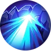

Chivalry Fist
After 4 Basic Attack, Badang's next Basic Attack will knock the target back, dealing (+120% Total Physical Attack) points of Physical Damage to them and enemies that are knocked back to an obstacle will be stunned for 0.8 second, while minions and creeps will be stunned immediately.
Badang's Qigong Fist and Fist Crack will also knock back enemies and stun them for 0.5 second if they are knocked back to a wall.| Physical Basic Attack | Deal Physical DMG to enemies. It can trigger ATK Effect and Physical Lifesteal. | | Knocked Back | A state that prevents a target from moving, attacking, or using skills. The target will move away from the caster within the duration. | | Stunned | A state that prevents a target from moving, attacking, or using skills. |
|
Passive
Qigong Fist AoE
Badang coheres all his strength to his fists and performs an overwhelming Fist Wind, dealing 220 / 255 / 290 / 325 / 360 / 395 (+70% Total Physical Attack) points of Physical Damage to the enemies on the path and slowing them by 30%.
The damage of this skill can trigger Basic Attack effects and grants 1 stack of Basic Attack for Chivalry Fist.
The fist wind explodes when it hits an obstacle, dealing an extra 155 / 180 / 205 / 230 / 255 / 280 (+50% Total Physical Attack) points of Physical Damage to enemies hit.| Physical Basic Attack | Deal Physical DMG to enemies. It can trigger ATK Effect and Physical Lifesteal. | | ATK Effect | Both Physical and Magic Basic ATK trigger ATK Effects. For example. the Devour Effect of Demon Hunter Sword, the Weakness Finder effect of Marksman Emblem, etc. |
|
Skill 1

Fist Break CC
Badang dashes towards the designated direction, dealing 230 / 250 / 270 / 290 / 310 / 330 (+50% Total Physical Attack) points of Physical Damage to enemies along the way.
If Badang encounters enemy heroes along the way, he will create an obstacle along the path for 4 seconds, knocking back enemies hit and dealing 130 / 140 / 150 / 160 / 170 / 180 (+30% Total Physical Attack) points of Physical Damage.
Use Again: Badang immediately removes the obstacle he creates.
If he doesn't hit any enemy hero along the way, this skill's cooldown will be reduced by 40%.
This skill can be blocked by Grounded effect.| Physical Skill | Deal Physical DMG to enemies. It doesn't trigger Physical/Magic Lifesteal but triggers Spell Vamp. | | Knocked Back | A state that prevents a target from moving, attacking, or using skills. The target will move away from the caster within the duration. | | CD | The time needed for casting the skill one more time, which can be affected by CD Reduction (unless otherwise stated). |
|
Skill 2
Fist Crack Burst Fight to protect and persist for benevolence.
Badang quickly throws his fists in a designated direction, gaining a shield that absorbs 500 / 750 / 1000 (+150% Total Physical Attack) points of damage that makes him temporarily immune to Crowd Control effects, and dealing 70 / 110 / 150 (+50% Total Physical Attack) points of Physical Damage to enemies for up to 10 times for a maximum damage of 700 / 1100 / 1500 (+500% Total Physical Attack) Physical Damage.
This skill benefits from Basic Attack effects, and when this skill hits an obstacle, Badang will deal an extra 42 / 66 / 90 (+30% Total Physical Attack) points of Physical Damage to enemies knocked against a wall.
Chivalry Fist: Badang can only stun an enemy once using this skill.| Physical Basic Attack | Deal Physical DMG to enemies. It can trigger ATK Effect and Physical Lifesteal. | | Shield | Special HP is preferentially deducted when taking damage. The shield with shorter duration or lower points is usually preferentially deducted when multiple shields are stacked. | | Control Immunity | You are immune to enemy CC effects (Suppressed excluded) within the duration. |
|
Skill 3


{kind=link}
{kind=link}
{kind=link}
{kind=link}